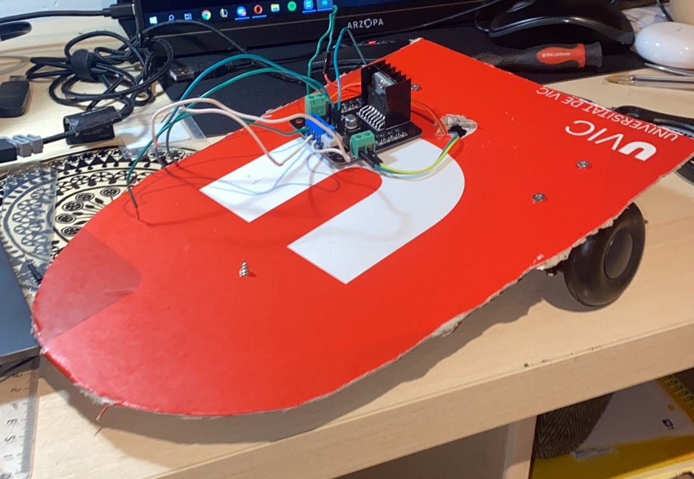
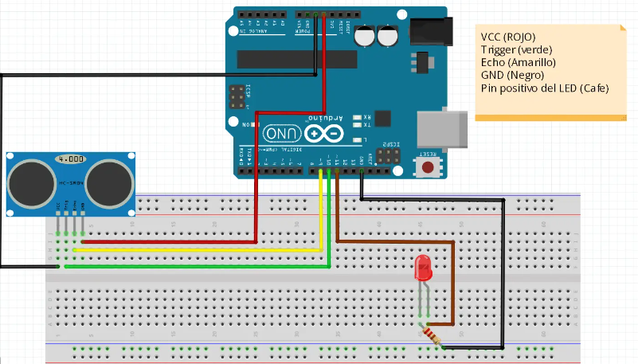
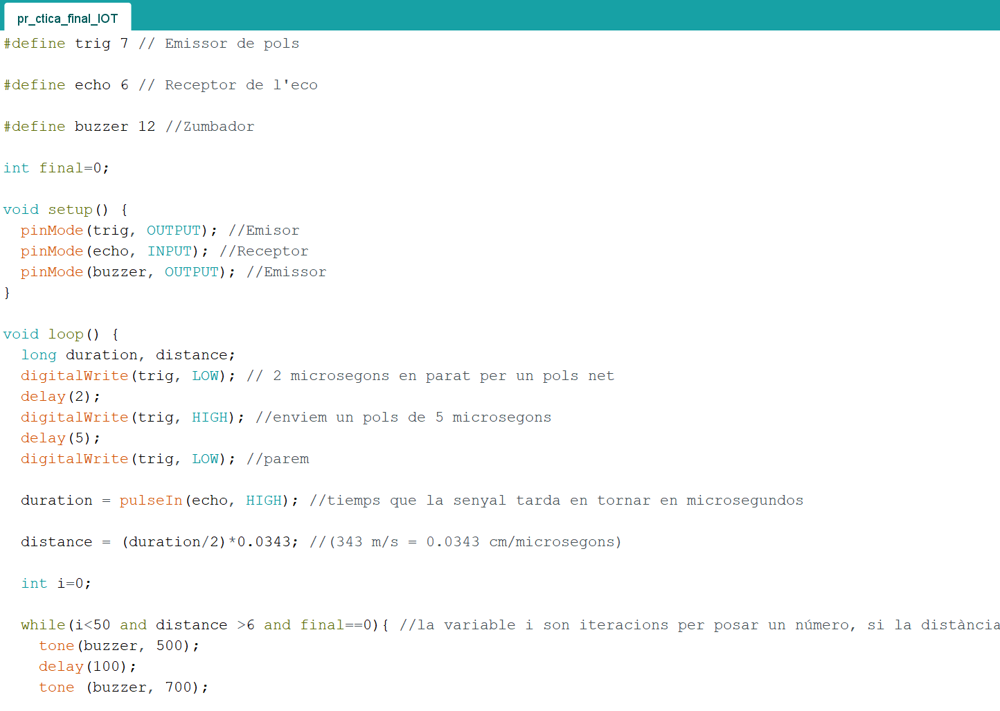

Part 1: Introducció a Arduino
Arduino és una plataforma electrònica de codi obert que permet a qualsevol persona construir projectes electrònics interactius utilitzant una àmplia gamma de dispositius. El nom "Arduino" prové del bar d'Ivrea, Itàlia, on alguns dels fundadors del projecte es reunien. El projecte Arduino va ser iniciat el 2005 per Massimo Banzi, David Cuartielles, Tom Igoe, Gianluca Martino, i David Mellis, tots ells associats amb l'Interaction Design Institute Ivrea.En el seu nucli, un Arduino és un petit ordinador (o microcontrolador) que es pot programar per llegir entrades d'una varietat de sensors, i controlar una varietat de sortides, com LEDs, motors, i altres dispositius. La plataforma Arduino està dissenyada per ser fàcil d'utilitzar per a principiants, però també prou potent per a usuaris més experimentats.Una de les coses que fa arduino tan accessible és l'àmplia gamma de diferents tipus de dispositius que es poden utilitzar amb ell. Ja sigui un afeccionat que busqui construir un simple parpellejador LED, o un professional que controli un sistema robòtic complex, hi ha un tauler d'Arduino que s'ajustarà a les vostres necessitats. Els taulers més populars d'Arduino són l'Arduino Uno i l'Arduino Mega, però hi ha molts altres taulers disponibles, com l'Arduino Nano, l'Arduino Mini i l'Arduino Micro.Per a programar un tauler d'Arduino, escriviu codi utilitzant un llenguatge de programació anomenat C++. Un cop hàgiu escrit el vostre codi, aleshores utilitzeu un programari especial anomenat IDE Arduino (Entorn Integrat de Desenvolupament) per transferir el vostre codi al tauler Arduino. L'IDE d'Arduino està disponible de forma gratuïta i s'executa en Windows, Mac i Linux. També és compatible amb una àmplia gamma de biblioteques de tercers, la qual cosa facilita afegir noves característiques als projectes.Un altre aspecte que fa que Arduino sigui molt atractiu és el suport de la comunitat, hi ha incomptables recursos disponibles, des del codi de mostra, a tutorials, a fòrums on la gent pot compartir els seus projectes i demanar ajuda. També hi ha molts complements de tercers, com ara escuts i mòduls, que es poden utilitzar per afegir fàcilment noves capacitats als projectes Arduino. Amb la capacitat de detectar i controlar el món físic, podeu utilitzar Arduino per crear projectes interactius com sistemes d'il·luminació, automatització domèstica, robòtica, jocs i més.

Part 2: Idea i Materials
La idea del nostre projecte era crear una alarma, però no una alarma normal sinó un de molt peculiar que es desplaces per el terra, d’aquesta manera l’usuari hauria de fer l’esforç de sortir del llit per apagar-la. Materials utilitzats:
- ● Microcontrolador
- ● Sensor de distància x2
- ● Motors
- ● Xassís del robot
- ● Bateria
- ● Altaveu
- ● H-Bridge
El material final utilitzat va anar variant a mesura que vam anar construint el nostre projecte, ja que inicialment volíem utilitzar relés per governar els motors, però vam veure que amb un H-Bridge tindríem un millor control dels nostres motors i els podríem governar millor, perquè ens donaven l'oportunitat de poder fer que les rodes giressin endavant i endarrere. Com podeu veure a l'imatge, el xassís és una mica precari ja que es tracta d'un prototip que vam construir per veure si realment el que haviem fet i pensat funcionava correctament.
Part 3: Explicació i ús
Per muntar un Arduino amb dos motors i dos sensors d'ultrasò, haureu de connectar els motors i els sensors a la placa d'Arduino i després pujar un programa a l'Arduino que controli els motors i llegeixi les dades del sensor. Primer, connecteu els motors a l'Arduino utilitzant l'H-bridge. Connecta els dos sensors d'ultrasons als pins d'entrada digitals de l'Arduino. Assegura't de connectar els pins al GND i potència dels sensors amb els corresponents pins GND i de potència en el tauler d'Arduino. A continuació, penjareu el programa que controla els motors i llegeixi les dades del sensor. El programa inclou instruccions per inicialitzar els motors i sensors, i per controlar els motors basats en les dades del sensor. És una molt bona idea comprovar que cada component funciona correctament per separat abans d'integrar-los junts per assegurar-se que funcionen com es pretenia. Un cop tot estigui connectat, utilitzeu el port sèrie per comprovar que els sensors estan funcionant i enviant dades a l'Arduino. Recordeu que el codi pot necessitar ser ajustat en funció de les característiques específiques dels motors i sensors que esteu utilitzant.
Part 4: Codi i descàrrega
Per fer els codis primer vam fer els funcionaments per parts un es va encarregar de la part de l'altaveu i la melodia i l'altre va investigar la mobilitat del robot i el funcionament dels motors. Per una banda, vam començar la part dels altaveus, vam intentar trobar una melodia que ens funciones com alarma, un cop vam tenir el codi fet i enllestit, vam incorporar el detector d'ultrasons per fer que quan acostessis la mà l'alarma s'apagués. I, per altra banda, vam treballar amb la mobilitat del nostre robot, teníem uns motors que s'alimentaven amb 5V i el principi utilitzàvem relés per governar-los, vam veure que necessitàvem dues piles una per a cada relé pel funcionament dels motors, i vam decidir canviar, vam deixar de banda els relés i vam utilitzar un H-Bridge que a part de tenir un ús molt fàcil ens permetia tenir governar millor els nostres motors, ja que a diferència dels relés podríem fer que les rodes giressin endavant i endarrere. A continuació us deixarem els codis individuals i després el codi final.
 Descarregar